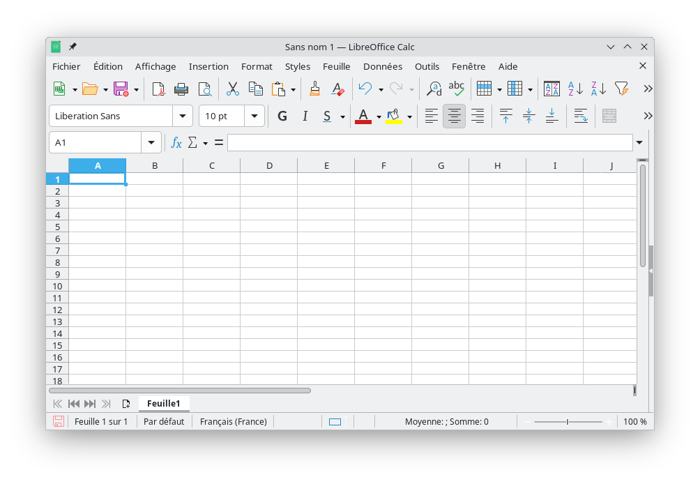
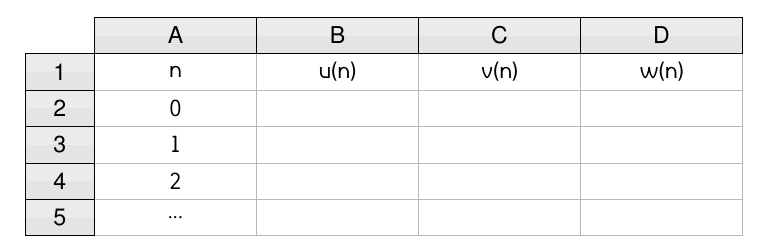
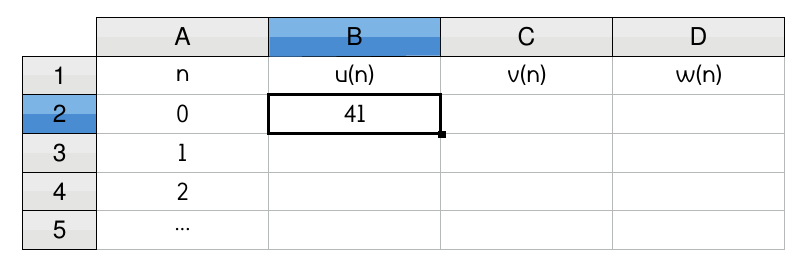
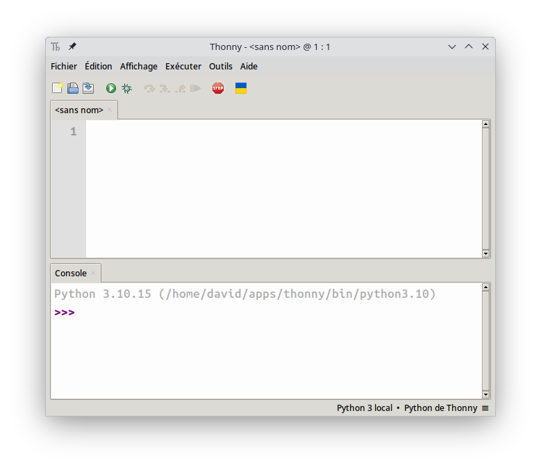
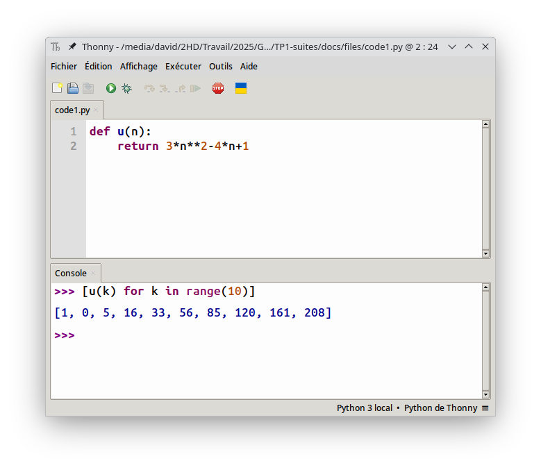
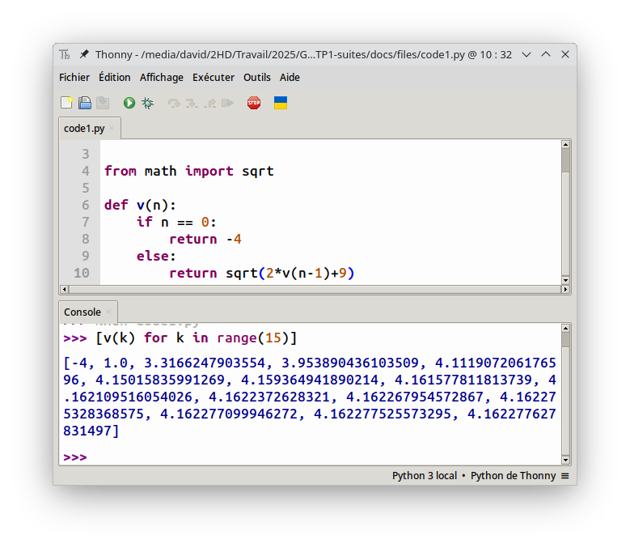
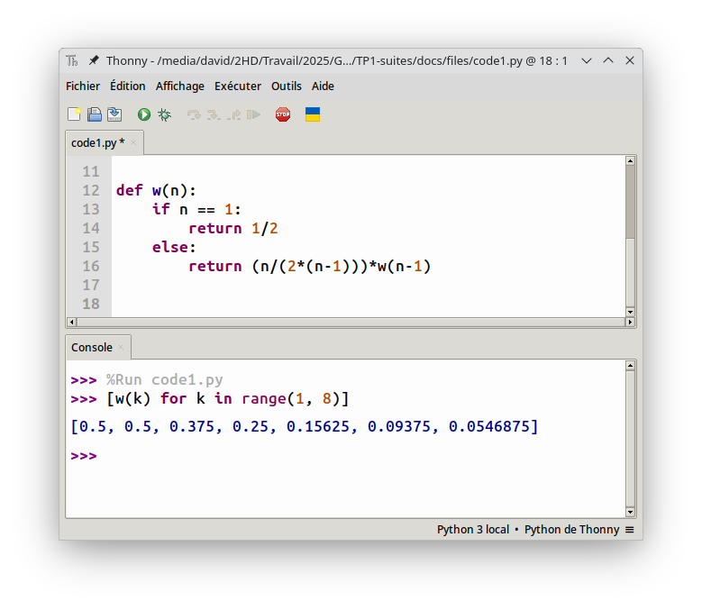

Générer des suites en informatique
Les suites mathématiques sont des objets qui répondent à des règles simples permettant de les générer.
On retrouve par exemple :
- une formule explicite ;
- une formule récurrente ;
- une formule utilisant une autre suite ;
- etc.
Dans ce TP, on apprend à générer des suites sur tableur et en Python afin d'observer leur comportement à l'infini.
Avec un tableur
Pour commencer
Les tableurs sont les logiciels le plus adaptés pour observer le comportement d'une suite.
On s'intéresse ici aux trois suites \(u\), \(v\) et \(w\) définies pour tout entier naturel \(n\) par :
Vocabulaire
La suite \(u\) est dite explicite alors que \(v\) est dite récurrente. La suite \(w\) est plutôt considérée comme récurrente.
Quelques manipulations
- Ouvrez le logiciel LibreOffice Calc
 - Reproduisez le tableau ci-dessous avec la valeur de \(n\) qui varie de 0 jusque 100.
 - Dans la cellule \(B2\) (concernant la suite \(u\)), saisissez la formule \(\fbox{=PUISSANCE(A2;2)+A2+41}\) puis validez.
- Étirez cette formule en double cliquant sur le petit carré en bas à droite de cette cellule.
 - De la même façon entrez la valeur associée à \(v_0\) dans la cellule \(C2\) puis saisissez la formule \(\fbox{=2-3*C2}\) dans la cellule \(C3\).
- Entrez la valeur associée à \(w_0\) dans la cellule \(D2\) puis saissisez la formule \(\fbox{=D2-4*PUISSANCE(A2;2)+1}\) dans la cellule \(D3\).
À vous de jouer
On considère les suites \(u\), \(v\) et \(w\) définies pour tout entier naturel \(n\) par :
- Réalisez un tableur générant les dix premiers termes de ces trois suites.
Avec Python
Pour commencer
Le langage Python est un atout informatique pour sa praticité et sa capacité à effectuer des calculs importants.
Tip
En python, pour définir une suite on utilise la notion de fonction.
On considère les suites \(u\), \(v\) et \(w\) définies pour tout entier naturel \(n\) par :
Pour les suites explicites comme \(u\), il est très simple d'utiliser le langage Python :
Quelques manipulations
- Ouvrez le logiciel Thonny
 -
Dans la zone de script (partie supérieure du logiciel), écrivez le code :
-
Enregistrez le fichier puis exécutez le grâce au bouton

- Pour générer les dix premiers termes de la suite \(u\), tapez dans la console (partie inférieure du logiciel), l'instruction
[u(k) for k in range(10)].
En python, il n'est possible que de générer des suites de la forme \(u(n)\) et non pas \(u(n+1)\).
Ainsi, pour la suite \(v\) définie par :
il est d'abord nécessaire de la réécrire sous la forme :
Info
On a réalisé un décalage de l'indice. Le \(n+1\) est devenu \(n\) et donc le \(n\) est devenu \(n-1\).
Quelques manipulations
-
À la suite du code précédent, tapez le code suivant :
-
Pour générer les quinze premiers termes, tapez dans la console
[v(k) for k in range(15)].
Pour la suite \(w\) définie par :
il faut faire attention au fait que le premier terme est \(w_1\) et non pas \(w_0\).
De plus, il faudra bien décaler tous les indices pour générer la bonne suite. En effet, \(w\) devient après décalage :
Quelques manipulations
-
À la suite du code précédent, tapez le code suivant :
Implantation de la suite w Warning
Remarquez que dans le bloc conditionnel, on a bien
if n == 1pour la gestion de \(w_1\). -
Générez les sept premiers termes grâce à l'instruction
[w(k) for k in range(1, 8)]
À vous de jouer
On s'intéresse aux suites définies pour tout entier naturel par :
- Écrivez un script permettant de définir ces trois suites puis générez les douze premiers termes de chacune d'entre elles.